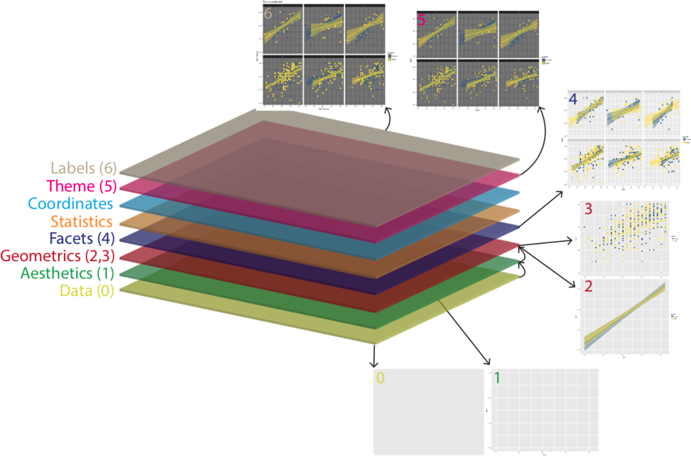
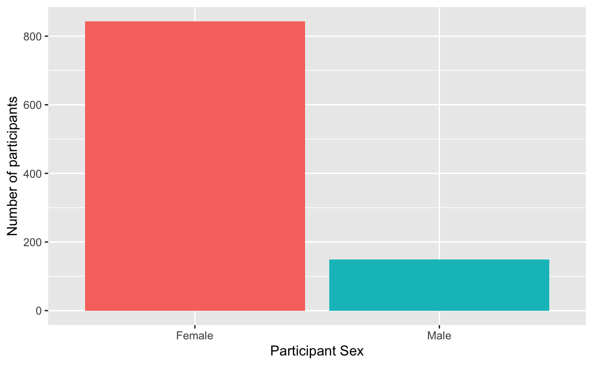
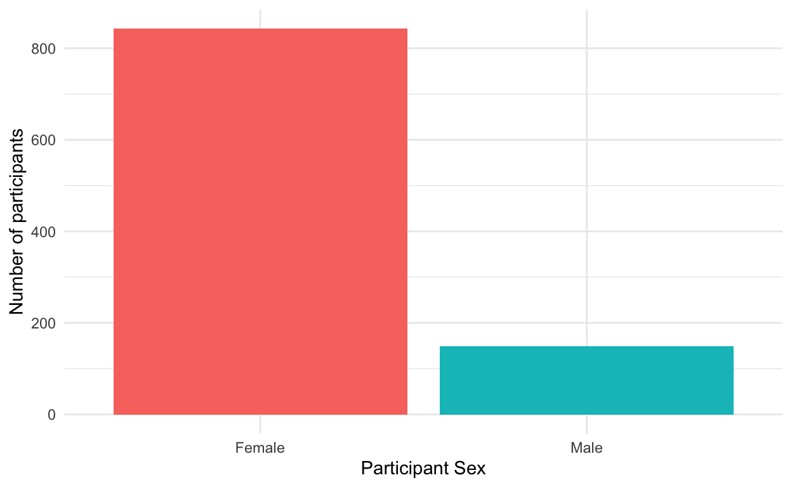
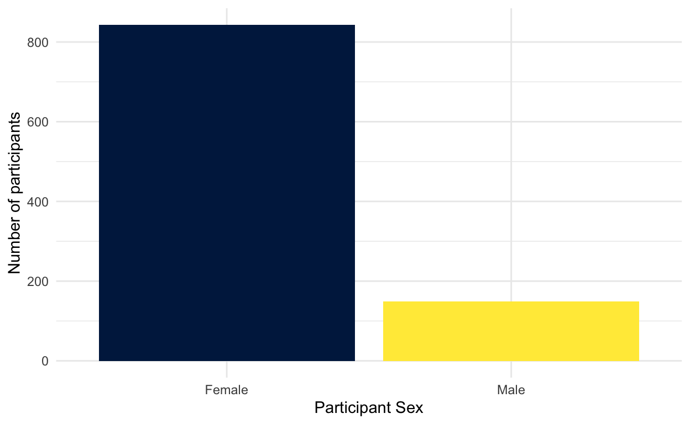
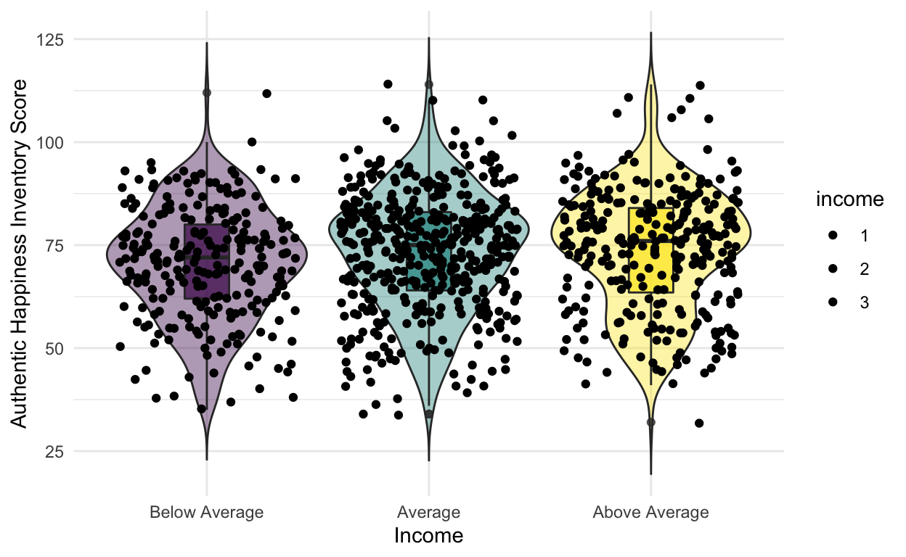
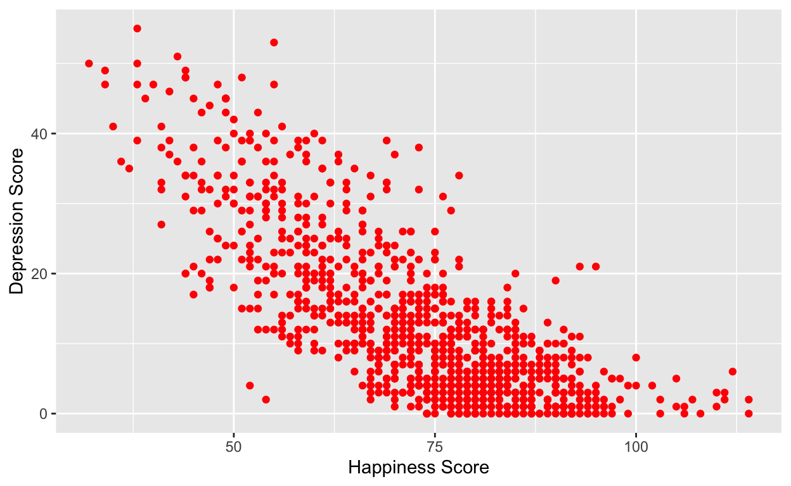
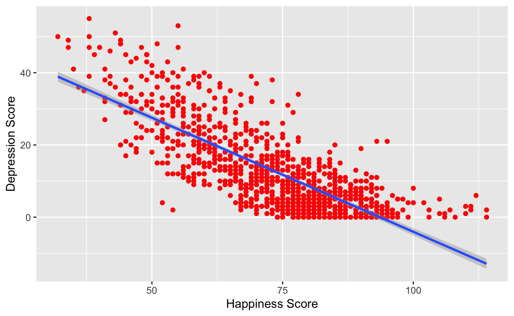
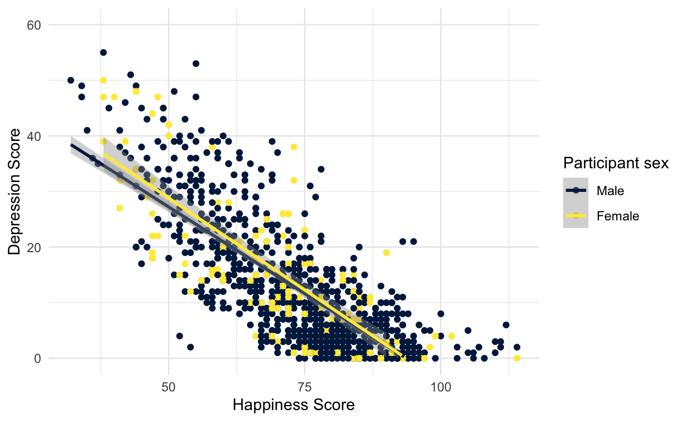
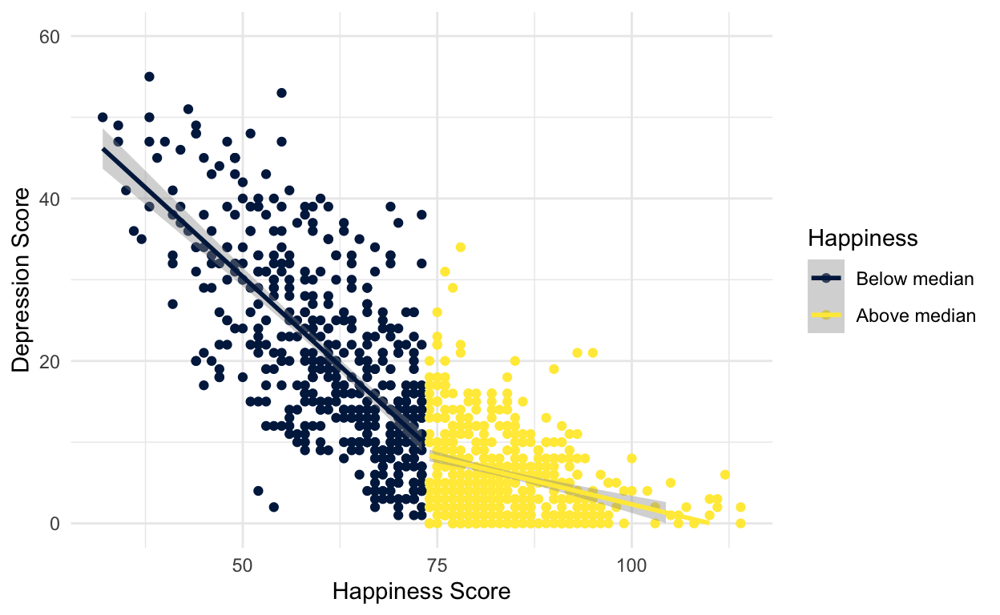

ggplot2: grammar of graphics
Being able to visualise our variables, and relationships between our variables, is a very useful skill. Before we do any statistical analyses or present any summary statistics, we should visualize our data as it is:
A quick and easy way to check our data make sense, and to identify any unusual trends.
A way to honestly present the features of our data to anyone who reads our research.
ggplot() builds plots by combining layers (see below).
If you’re used to making plots in Excel this might seem a bit odd at
first, however, it means that you can customize each layer and R is
capable of making very complex and beautiful figures (this website gives you a good sense
of what’s possible).

As we will again use the data from the positive psychology replication study, we´ll quickly re-run import, inner_join() and selection of variables of interest.
dat <- read_csv ("datasets/positive_psychology/ahi-cesd.csv") # import intervention data
pinfo <- read_csv("datasets/positive_psychology/participant-info.csv") # import participant data
all_dat <- inner_join(x = dat, # the first table you want to join
y = pinfo, # the second table you want to join
by = c("id", "intervention")) # columns the two tables have in common
summarydata <- select(.data = all_dat,
ahiTotal, cesdTotal, sex, age, educ, income, occasion,elapsed.days)
Before we go any further we need to perform an additional step of data processing that we have glossed over up until this point. First, run the below code to look at the structure of the dataset:
head(summarydata)
# A tibble: 6 × 8
ahiTotal cesdTotal sex age educ income occasion elapsed.days
<dbl> <dbl> <dbl> <dbl> <dbl> <dbl> <dbl> <dbl>
1 63 14 2 35 5 3 0 0
2 73 6 2 35 5 3 1 11.8
3 73 7 1 59 1 1 0 0
4 89 10 1 59 1 1 1 8.02
5 89 13 1 59 1 1 2 14.3
6 93 8 1 59 1 1 3 32.0 str(summarydata)
tibble [992 × 8] (S3: tbl_df/tbl/data.frame)
$ ahiTotal : num [1:992] 63 73 73 89 89 93 80 77 77 85 ...
$ cesdTotal : num [1:992] 14 6 7 10 13 8 15 12 3 5 ...
$ sex : num [1:992] 2 2 1 1 1 1 1 1 1 1 ...
$ age : num [1:992] 35 35 59 59 59 59 59 59 51 51 ...
$ educ : num [1:992] 5 5 1 1 1 1 1 1 4 4 ...
$ income : num [1:992] 3 3 1 1 1 1 1 1 3 3 ...
$ occasion : num [1:992] 0 1 0 1 2 3 4 5 0 2 ...
$ elapsed.days: num [1:992] 0 11.77 0 8.02 14.3 ...R assumes that all the variables are numeric (represented by
num) and this is going to be a problem because whilst
sex, educ, and income are
represented by numerical codes, they aren’t actually numbers, they’re
categories, or factors.
We need to tell R that these variables are factors and
we can use mutate() to do this by overriding the original
variable with the same data but classified as a factor.
You can read this code as “overwrite the data that is in the column sex with sex as a factor”.
Remember this. It’s a really important step and if your graphs are looking weird this might be the reason.
For our first example we will recreate the bar plot showing the number of male and female participants from loading data by showing you how the layers of code build up.
The first line (or layer) sets up the base of the graph: the data to use and the aesthetics (what will go on the x and y axis, how the plot will be grouped).
aes() can take both an x and
y argument, however, with a bar plot you are just asking R
to count the number of data points in each group so you don’t need to
specify this.
geom or a shape, in
this case we use geom_bar() as we want to draw a bar
plot.fill to the first layer will separate the data
into each level of the grouping variable and give it a
different colour. In this case, there is a different colored bar for
each level of sex.fill() has also produced a plot legend to the right of
the graph. When you have multiple grouping variables you need this to
know which groups each bit of the plot is referring to, but in this case
it is redundant because it doesn’t tell us anything that the axis labels
don’t already. We can get rid of it by adding
show.legend = FALSE to the geom_bar()
code.We might want to tidy up our plot to make it look a bit nicer. First we can edit the axis labels to be more informative. The most common functions you will use are:
scale_x_continuous() for adjusting the x-axis for a
continuous variable
scale_y_continuous() for adjusting the y-axis for a
continuous variable
scale_x_discrete() for adjusting the x-axis for a
discrete/categorical variable
scale_y_discrete() for adjusting the y-axis for a
discrete/categorical variable
And in those functions the two most common arguments you will use are:
name which controls the name of each axis
labels which controls the names of the break points
on the axis
There are lots more ways you can customise your axes but we’ll stick with these for now. Copy, paste, and run the below code to change the axis labels and change the numeric sex codes into words.
ggplot(summarydata, aes(x = sex, fill = sex)) +
geom_bar(show.legend = FALSE) +
scale_x_discrete(name = "Participant Sex",
labels = c("Female", "Male")) +
scale_y_continuous(name = "Number of participants")

Second, you might want to adjust the colors and the visual style of
the plot. ggplot2 comes with built in themes. Below, we’ll
use theme_minimal() but try typing theme_ into
a code chunk and try all the options that come up to see which one you
like best.
ggplot(summarydata, aes(x = sex, fill = sex)) +
geom_bar(show.legend = FALSE) +
scale_x_discrete(name = "Participant Sex",
labels = c("Female", "Male")) +
scale_y_continuous(name = "Number of participants") +
theme_minimal()

There are various options to adjust the colors but a good way to be
inclusive is to use a color-blind friendly palette that can
also be read if printed in black-and-white. To do this, we can add on
the function scale_fill_viridis_d(). This function has 5
colour options, A, B, C, D, and E. I prefer E but you can play around
with them and choose the one you prefer.
ggplot(summarydata, aes(x = sex, fill = sex)) +
geom_bar(show.legend = FALSE) +
scale_x_discrete(name = "Participant Sex",
labels = c("Female", "Male")) +
scale_y_continuous(name = "Number of participants") +
theme_minimal() +
scale_fill_viridis_d(option = "E")

Finally, you can also adjust the transparency of the bars by adding
alpha to geom_bar(). Play around with the
value and see what value you prefer.
ggplot(summarydata, aes(x = sex, fill = sex)) +
geom_bar(show.legend = FALSE, alpha = .8) +
scale_x_discrete(name = "Participant Sex",
labels = c("Female", "Male")) +
scale_y_continuous(name = "Number of participants") +
theme_minimal() +
scale_fill_viridis_d(option = "E")
Short note: In R terms, ggplot2 is a fairly old
package. As a result, the use of pipes wasn’t included when it was
originally written. As you can see in the code above, the layers of the
code are separated by + rather than %>%. In
this case, + is doing essentially the same job as a pipe -
be careful not to confuse them.
When checking out other peoples´ work, you may however find different approaches using pipes along the way (but NOT inside the plotting itself):
summarydata %>%
ggplot(aes(x = sex, fill = sex)) +
geom_bar(show.legend = FALSE, alpha = .8) +
scale_x_discrete(name = "Participant Sex",
labels = c("Female", "Male")) +
scale_y_continuous(name = "Number of participants") +
theme_minimal() +
scale_fill_viridis_d(option = "E")
Violin plots are a nice way to visualize distributions, and potentially include different moments. I´ll later show you some nice ways to actually tweak them by cutting them in half. But first things first.
We add a y argument to the first layer because we
wanted to represent two variables, not just a count.
geom_violin() has an additional argument
trim. Try setting this to TRUE to see what
happens.
geom_boxplot() has an additional argument
width. Try adjusting the value of this and see what
happens.
ggplot(summarydata, aes(x = income, y = ahiTotal, fill = income)) +
geom_violin(trim = FALSE, show.legend = FALSE, alpha = .4) +
geom_boxplot(width = .2, show.legend = FALSE, alpha = .7)+
scale_x_discrete(name = "Income",
labels = c("Below Average", "Average", "Above Average")) +
scale_y_continuous(name = "Authentic Happiness Inventory Score")+
theme_minimal() +
scale_fill_viridis_d()

We will now work with our data to generate a scatterplot of two variables.
First, we want to look at whether there seems to be a relationship between happiness and depression scores across all participants.
In order to visualize two continuous variables, we can use a
scatterplot. Using the ggplot code you learned
before, try and recreate the below plot.
A few hints:
Use the summarydata data.
Put ahiTotal on the x-axis and cesdTotal on the y-axis.
Rather than using geom_bar(), geom_violin(), or geom_boxplot(), for a scatterplot you need to use geom_point().
Rather than using scale_fill_viridis_d() to change the colour, add the argument colour = “red” to geom_point (except
replace “red” with whatever colour you’d prefer).
Remember to edit the axis names.

Scatterplots are very useful but it can often help to add a line of best fit to help interpretation. Add the below layer to your scatterplot code:
This code uses the function geom_smooth() to draw
the line. There are several different methods but we want a straight, or
linear, line so we specify method = "lm".
This line is really a regression line, which you’ll learn more about later.
By default the regression line will be extended, beyond the
original y-axis limits, if you want to change this so that your plots
looks like the below, add limits = c(0,60) to
scale_y_continuous()
geom_smooth(method = "lm")

It seems fairly obvious that there might be a negative relationship between happiness and depression, so instead we want to look at whether this relationship changes depending on different demographic variables.
We can now use our factor variables (e.g., sex) to
display the data in the scatterplots for each group.
Rather than adding colour to
geom_point() which sets the colour for all the
data points, instead we add colour = sex to the
aesthetic mapping on the first line. This tells
ggplot() to produce different colours for each
level (or group) in the variable sex.
scale_color_viridis_d() works exactly like the other
colour blind friendly scale functions you have used, so we can use name
and labels to adjust the legend.
ggplot(summarydata, aes(x = ahiTotal , y = cesdTotal, colour = sex)) +
geom_point() +
scale_x_continuous(name = "Happiness Score") +
scale_y_continuous(name = "Depression Score",
limits = c(0,60)) +
theme_minimal() +
geom_smooth(method = "lm") +
scale_color_viridis_d(name = "Participant sex",
labels = c("Male", "Female"),
option = "E")

It looks like the relationship between happiness and depression is about the same for male and female participants.
Create another scatterplot that shows the relationship between
happiness and depression grouped by educ. Make sure you
update the legend labels.
So, let’s be honest, there’s not much going on with any of the demographic variables - the relationship between depression and anxiety is pretty much the same for all of the groups. A reasonable hypothesis might be that rather than being connected to any demographic variables, the relationship between happiness and depression changes depending upon your general happiness level.
Using mutate, create a new variable named
happiness in summarydata that evaluates
whether a participant’s happiness score is equal to or higher than the
median ahiTotal score.
This is not an easy task as it’s not something I’ve explicitly shown you how to do but, do a bit of trial and error and you´ll do it.
If you’ve done it right, summarydata should contain a column
named happiness with the value TRUE if
ahiTotal is above the overall median and FALSE
if it is below.

ggplot2 provides us with a host of different plotting
options for different types of data. I´ll provide a brief overview of
the most common ones under the Types / overview-tab.